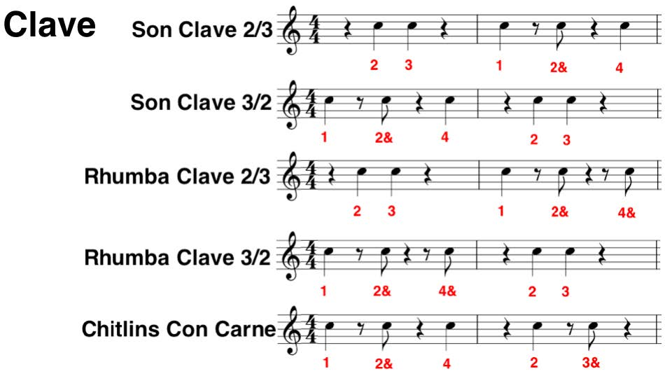

Een stukje geschiedenis…
De oorsprong van jazz moet gesitueerd worden in het Noord-Amerikaanse deel van het Amerikaanse continent. Waar voornamelijk West-Afrikaanse slaven in contact kwamen met blanke kolonisten, ontstonden nieuwe muziekvormen.
Uit het contact tussen zwarten en
- ● Engelsen en Fransen in Noord-Amerika ontstond jazz
- ● Latijnse volkeren ontstonden de latin-stijlen
Deze ontwikkeling werd onder meer in hand gewerkt door de aard van de plantages die door de migranten opgericht werden. Engelse protestantse plantages waren klein en bevorderden de wisselwerking; Latijns christelijke plantages waren uitgestrekt en beperkten de onderlinge contacten en hier bleef de originele cultuur van de slaven langer doorwerken.
Eén van de dingen die ik zo fascinerend vind aan jazz is hoe verschillende muziekculturen een gemeenschappelijke grond hebben gevonden om met elkaar in interactie te gaan. Om dit te achterhalen kan het hulpzaam zijn om de culturen van naderbij te bekijken en op zoek te gaan naar die ingrediënten die vergelijkbaar zijn.
Latijns-Amerikaanse Muziek
CUBA
De Habanera, genoemd naar de hoofdstad Havana, wordt gespeeld in een traag 2/4 ritme en is in de Europese muziek al terug te vinden in Carmen van Bizet.
De Rumba is de meest zuivere Afrikaanse muziekstijl in Cuba. Dit was mogelijk door de relatieve tolerantie van de Spanjaarden voor hun Afrikaanse slaven, deels door het grote aantal slaven en deels door de lange duur van die slavenhandel. Deze werd pas rond 1870 aan banden gelegd. Oorspronkelijk was de Rumba een vocale dansmuziek met thema’s uit het dagelijkse leven maar vaak ook aan santeria verbonden thema’s of Afrikaanse, stam gebonden rituelen alleen gekend bij een klein aantal ingewijden. De rumba werd uitgevoerd in antifonale zetting (solist vs. koor), begeleid met conga’s (tumba, segundo en quinto) en claves. Deze slagstaafjes geven het basisritme weer, ook clave genaamd. In hoofdzaak is de Rumba een set van drie dansen: de Yambu, de Columbia en de Guaguanco. Voorbeeld: “Armando’s Rhumba” Chick Corea – My Spanish Heart (1976)
